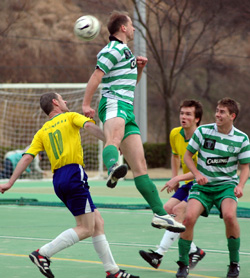
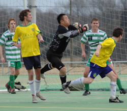

|
Big Circus, Sun 12th March. In the end a disappointing result for the Celts in a game where they dominated posession and chances. Despite playing all the football and creating several chances, a killer instinct was lacking when it counted.

In terms of promotion probably a worse result for Shane, as they now need to win all of their remaining games and hope that the Celts slip up against the Clash in the final game. The main beneficiaries were the Jets, who know now that if they avoid defeat against Shane, they're pretty much home and dry for winning the league.
The opening exhanges were cagey, with both sides recognising the importance of the game. But the Celts thought they should have had a penalty after a couple of minutes, when Adam was clobbered by a late challenge from the keeper, ending up with a graized head, leg injury and a fractured wrist. Ref Ollie from AFC having kindly stepped in as a last minute ref replacement waved away the appeals.
Both midfields were working hard, with Roberto showing the other improved side to his game of defensive play and hardwork on the wing. Dermot and Magoo were lively while striker Oli gave the Shane defence a few moments of anxiety with his strong running.
He even confused the Shane linesman who constantly insisted on flagging him for offside, even with the ball 30 yards away from him on the opposite side of the pitch which was particularly unhelpful to the referee.

Neils strength and physical presence also caused problems, without seriously testing the keeper. Celts defence marshalled by Gav and Benny were calm, composed and strong into the tackle, restricting the Shane attack to just a couple of half chances in the whole game. The Celts best chance game midway through the 2nd half when a free kick was floated in by Benny, Gav rose superbly only to see his header crack off the cross bar, and in the goalmouth scramble that followed nobody was able to apply the finish.
As the Shane defence began to tire, the Celts ran out of time, and despite being a point closer to promotion, the disappointment was evident on everyones face afterwards.
The Clash, not a pushover by any means now stand in the way of confirmed promotion.
In the end the result was overshadowed by serious injuries to midfielder Magoo, who broke his collarbone as a result of a challenge from a Shane defender and is likely to be out for 4-6 weeks, and Adam who soldiered on with a fractured wrist for the majority of the game caused by the earlier challenge from the goalkeeper.
All of the Celts wish them a speedy recovery.
Man of the Match Gavin Duffy
Match reporter: Ruairi Hatchell.
|